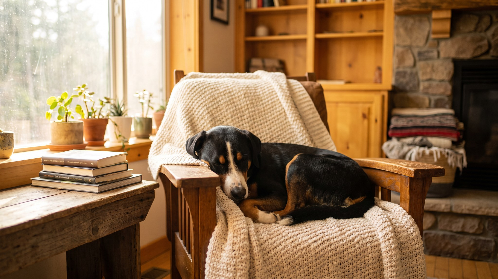

Хозяин купил аппенцеллера, потому что тот красивый и «похож на бернца, только поменьше». Через три месяца собака разнесла мебель и начала пасти детей в квартире. Дело не в плохом воспитании: порода выведена для работы в горах, и без настоящей нагрузки эта энергия никуда не девается. Ниже разберём, что ждёт владельца аппенцеллера и кому такая собака подходит по-настоящему.
🐾 У вас аппенцеллер зенненхунд?
AnimaLife соберёт уход под породу: к каким болезням есть склонность, что проверять по возрасту, чем кормить и когда пора к врачу. Бесплатно, прямо в мессенджере.
Собрать план ухода → Собрать в MAX →
У вас iPhone? AnimaLife есть в App Store
Аппенцеллер зенненхунд входит в семью четырёх швейцарских зенненхундов и остаётся наименее известным в России. Порода сотни лет гоняла скот по альпийским пастбищам, охраняла фермы и работала в горах. Всё это отложилось в характере: высокая реакция, постоянная готовность к действию, склонность следить за «стадом» (в городских условиях стадом становится семья).
Аппенцеллер ищет задачу. Если задачи нет, он придумывает её сам: лает на прохожих за окном, переставляет вещи, загоняет детей в угол. Это не агрессия и не вредность. Просто пастушья психика без применения ищет выход.
Две прогулки по 20 минут этой породе не хватит. Аппенцеллеру нужна физическая и умственная работа каждый день. Без этого у собаки нарастает тревожность.
Собака, получающая достаточно нагрузки, спокойна в доме и не разрушает вещи.
Шерсть у аппенцеллера короткая, плотная, трёхцветная (чёрный, рыжий, белый). Уход несложный: расчёсывание раз в неделю, а в период линьки чаще. Линяют дважды в год, линька умеренная. Купание по мере загрязнения, не чаще раза в месяц.
По поводу жилья: теоретически порода может жить в квартире, но только при условии очень высокой ежедневной нагрузки. Частный дом с большим двором подходит лучше. В тесном пространстве без работы аппенцеллер быстро становится проблемой.
Порода подходит людям, которые ведут активный образ жизни, готовы тратить на собаку по 2–3 часа в день и хотят думающего партнёра, а не компаньона на диване. Аппенцеллер хорошо ладит с детьми, но маленьких может нечаянно пасти. Хорошо учится, если обучение регулярное и последовательное.
Порода не подходит занятым людям с насыщенным рабочим графиком, тем, кто живёт в маленькой квартире без возможности много гулять, и семьям, которые хотят спокойную и неприхотливую собаку. Аппенцеллер требователен. Это честная цена за характер и преданность.
Материал носит информационный характер и не заменяет очную консультацию ветеринара.
🐾 Ваш питомец — аппенцеллер зенненхунд?
Заведите профиль в AnimaLife: приложение запомнит породу, возраст и вес и будет подсказывать по уходу именно для неё. Вопросы AI-ветеринару — круглосуточно и бесплатно.
Завести профиль → Завести в MAX →
У вас iPhone? AnimaLife есть в App Store
🐾 Понравился разбор?
Подпишитесь на канал — каждый день разбираем по одному тревожному симптому у кошек и собак: что в пределах нормы, а когда пора к врачу. Подпишитесь, чтобы не пропустить разбор, который может спасти здоровье вашего питомца.